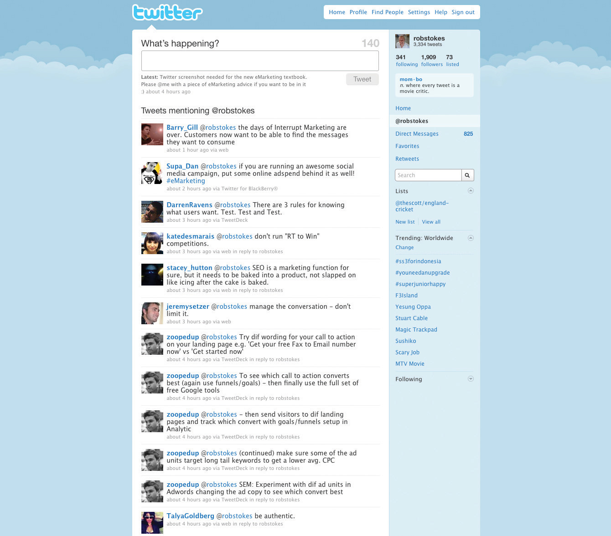

Everyone has an opinion, and the Internet allows for everyone to share their opinion. Blogs and podcasts have emerged as social media that are being embraced across the Internet population.
A blog is a Web site where entries (blog posts) are typically displayed in reverse chronological order. Technorati, a blog and social media–tracking engine, defines a blog as a “regularly updated journal published on the web.”Thad McIlroy, “The Future of Blogs,” The Future of Publishing, June 24, 2008, http://www.thefutureofpublishing.com/industries/the_future_of_blogs.html (accessed June 23, 2010). Blogs usually allow for comments on blog posts. A typical blog will feature text, images, and links to other blogs and Web sites related to the topic of the blog. Blogs range from the personal to the political and everything in between. They can be written by one person or by a group of people. Some are aimed at the blogger’s immediate family and friends, and others rival leading newspapers in terms of reach and readership. Blogs are mostly textual but can be composed solely of images, videos, audio, or any combination of these.
According to Technorati data, there are over 175,000 new blogs created and over 1.6 million posts updated every day (over eighteen updates a second). That’s a lot.
The power of blogs is that they allow anyone to publish and share ideas, and anyone can read and respond to these. They have given consumers and companies a voice, and blogging has opened up a world of information-sharing possibilities.
The basic elements of a blog post are the following:
Some other elements of a blog include the following:
RSS readers can be integrated with an e-mail client, can work offline, or can be online only. Some are free, and some are not. Look at your e-mail client to see if you can set one up there, or try http://www.bloglines.com, http://www.google.com/reader, or http://www.feeddemon.com. Find the one with the features that suit your needs.
RSS stands for “really simple syndication” and allows for information to be syndicated. This means that instead of you visiting various Web sites for updates and information, information is packaged and sent to your RSS reader. Information is supplied by Web sites in a standard feed format, and your RSS reader knows how to turn that into something that makes sense to you. As soon as an RSS feed is updated, that is, new information is added, it appears in your RSS reader.
RSS readers are a useful way to keep up to date with blogs, as most supply an RSS feed of their posts. Still confused? Take a look at http://commoncraft.com/rss_plain_english.
Whether blogging as an individual or a company, plenty can be gained from the process. You can do the following:
Search engines value regular, fresh content, and by blogging you can create just that. The more you post, the more often search engines will spider your site looking for additional, relevant content. Basing your blog on your keyword strategy created in the search engine optimization (SEO) process can also aid your Web site in ranking for those key phrases. Blogs, by their social nature, can also increase the incoming links to your Web site. Using a blog platform that has been designed to be search engine friendly is crucial to harnessing the SEO power of blogging. Some features of SEO-friendly blogging software include the following:
Blogs can be very successful marketing tools. They are an excellent way to communicate with staff, investors, industry members, journalists, and prospective customers. Blogging also helps to foster a community around a brand and provides an opportunity to garner immediate feedback on developments. This is an audience made up of players key to the success of a company: that makes it important to get blogging right.
Generally the tasks that a blogger undertakes include:
For corporate blogs, it is important to outline a strategy and establish guidelines before starting the blog, especially as there will most likely be a number of contributors. Transparency and honesty are important, but companies also need to be aware of sensitive information being blogged. If there are “no go” areas, they need to be clearly defined to the parties involved. While certain topics can be restricted, ultimately the bloggers should be granted the freedom to express both negative and positive points of view about the approved topics.
Positive claims are more believable if the blogger is able to express negative views as well. For example, Robert Scoble in his popular blog http://www.scobleizer.com admitted that the Firefox browser was better than Microsoft’s Internet Explorer. Robert Scoble was an employee of Microsoft at the time. This honesty gave him a credible voice, and so his positive views on Microsoft are respected by the community.
Corporate blog content should be:
While Technorati may be tracking 112.8 million blogs, it doesn’t mean that all of these blogs will still be active by the end of the year—in fact, only 55 percent of blogs make it past the first three months.David Sifry, “State of the Blogosphere, April 2006, Part 1: On Blogosphere Growth,” Sifry’s Alerts, April 17, 2006, http://www.sifry.com/alerts/archives/000432.html (accessed May 27, 2008). Longevity rests in the hands of the blogger, but here are some tips to raise the profile of a blog:
MicrobloggingThe practice of sending brief text updates (usually, 140–200 characters), images, as well as audio clips and publishing them online, either to be viewed by anyone or by a restricted group that can be chosen by the user. is a form of blogging that allows a user to publish short text updates, usually limited to two hundred characters that can be viewed by anyone or restricted to a specified community as specified by the microblogger. This can be accomplished using various communication tools such as instant messaging (IM) via the Web, text messaging on your mobile phone, and even a Facebook application. Microblogging can also refer to the publishing of short posts using a limited number of images, audio, or video files. Currently, the most popular text microblogging service is called Twitter (http://www.twitter.com), which was launched in July 2006. Other similar sites include the likes of Jaiku (http://www.jaiku.com), Identi.ca (http://www.identi.ca), as well as Yammer (http://www.yammer.com). Examples of rich media-based microblogs include Tumblr (http://www.tumblr.com), Streem (http://www.streem.us), and Soup (http://www.soup.io). On Twitter, posts are called tweets and are limited to 140 characters. Despite frequent disruptions to Twitter’s service, its users are fiercely loyal. These posts are usually short thoughts or URLs to interesting articles.
Twitter has also become massively popular due to the nature of its immediacy. Major news events such as the Mumbai attacks in November 2008 were extensively covered by Twitterers, and breaking news can also regularly be found here first. A year-on-year study from February 2008 to February 2009 saw Twitter’s monthly unique visitors increase by 1,382 percent.Michelle McGiboney, “Twitter’s Tweet Smell of Success,” NielsenWire, March 18, 2009, http://blog.nielsen.com/nielsenwire/online_mobile/twitters-tweet-smell-of-success (accessed June 20, 2010). Twitter has entered the mainstream, with public figures such as Barack Obama (http://www.twitter.com/barackobama) and Britney Spears (http://www.twitter.com/britneyspears) having set up accounts.
Figure 8.5 A Twitter Feed Appearing at http://www.twitter.com/robstokes
Blogs are powerful because of their reach, their archives (information is seldom deleted and is thus available long after it has been posted), and the trust that other consumers place in them. For a marketer, they present opportunities to learn how others perceive your brand and to engage with your audience. Some brands get this right; some get it wrong.
Above are some guidelines for corporate blogging, but marketers do not need to be bloggers to use this tool. As with all other social media, blogs provide a snapshot of audience sentiment regarding a brand. Marketers can also listen to blog activity around competitors in order to gain market insights.
Although blogging is the best way to respond to and engage with bloggers, companies can also interact with bloggers by commenting on relevant posts. Demonstrating the capacity to listen to bloggers, and then respond using the same medium, can reap tremendous benefits with this community.
A podcast is a digital radio (or video) program downloadable from the Internet. Podcasting started to take off around 2004, and it zoomed from “geekdom” to mainstream so quickly that “podcast” was voted 2005 Word of the Year by the editors of the New Oxford American Dictionary.Lamat Rezaul Hasan, “Lingowise: Top Word of the Year 2005,” Hindustan Times, February 4, 2006, http://www.hindustantimes.com/LINGOWISE-Top-word-of-the-year-2005/Article-59368.aspx (accessed June 20, 2010); “‘Podcast’ Is the Word of the Year,” Oxford University Press, 2005, http://www.oup.com/us/brochure/NOAD_podcast/?view=usa (accessed June 24, 2010). Podcasts started as audio blogs. People then figured out a way of distributing them using the same RSS feeds that were being used to distribute blog post information. It was then possible to subscribe to a podcast as one would a blog. Suddenly you could listen to a whole range of programs and voices whenever and wherever you wanted. It was radio without a station telling what you could hear and when. Just as blogs have allowed people to become writers without having to deal with a media channel controlled by someone else, podcasting has allowed anyone who fancies it to become a broadcaster.
With the right kind of “podcatching” software on your computer, the latest edition of any podcast you subscribe to is automatically downloaded every time you log on. Most people use iTunes. Go to http://www.apple.com/itunes/store for more information on podcasting and a huge list of available podcasts. You can listen on your computer or transfer the file to an iPod or any other kind of MP3 player. You don’t have to have an iPod to listen; the name came from the fact that the iPod was taking off at the same time and the “pod” (play on demand) part fitted this new medium. Podcasts are usually free.
Podcasts are usually recorded and edited using home equipment and done for the love of it. There is specialized podcasting software available like Apple’s Garage Band or QuickTime Pro. These packages make it quite simple to record, mix, and format the audio files correctly. Just like bloggers, though, many podcasters are trying to figure out ways of making money from their podcasts and turning listeners into revenue.
Go and have a look at Paul Colligan’s site (http://www.paulcolligan.com). He’s one person who says he knows how you can make money via podcasting.
Many people are producing music podcasts. This has meant a huge move to circumvent traditional rights issues about downloading music from the Internet. There is now a large body of music that is classified “podsafe.” This has either been composed especially for podcasts (as jingles, etc.) or the artist has specifically decided that they want their music to be available via the Net for all who want to hear it.
Radio stations have realized that they have a whole new way of using their content. They began packaging their output so that fans could listen to their favorite shows whenever they wanted to (without the music). The British Broadcasting Corporation (BBC) is awash with podcasts (http://www.bbc.co.uk/podcast). In South Africa, 5FM (http://www.5fm.co.za) was the first station to use them. Now nearly every radio station offers them—have a look at radio stations such as Classic FM (http://www.classicfm.co.za), Talk Radio 702 (http://www.702.co.za), and East Coast Radio (http://www.ecr.co.za).
In 2005, the BBC’s award-winning Naked Scientists program became the first example of a BBC local radio program to enter the podcast arena. Naked Scientists has since gone on to become one of the most downloaded science podcasts internationally, returning a larger audience via podcast than the live aired program (http://www.thenakedscientists.com).
Educators and teaching institutions have latched onto podcasting as a way of sharing content and providing tuition for learners who cannot be present at lectures or tutorials. The corporate world is also realizing that podcasting can add huge value to communications mixes. The term “podcast” is increasingly being used to cover any audio or video that is embedded in an organization’s Web site.
Podcasts offer an incredible opportunity for marketers. The bottom line is that you now have a way of getting content to your target markets without having to persuade a media channel to carry it or to pay huge advertising rates.
Podcasts have the following traits:
However, the content must have the following traits:
This is not about advertising or even just product information. It is about coming up with ideas for real programs that, through informing or entertaining, enhance your customers’ experiences of your brand.